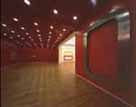
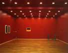
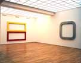
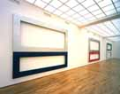
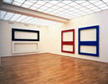
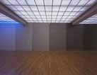
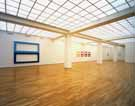
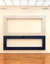
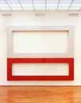

Galerie Anselm Dreher / Gerold Miller
Ausstellung "get ready", Werkraum 11 im Hamburger
Bahnhof
- Museum für Gegenwart, Nationalgalerie Berlin, Okt./Nov.2002
|  |  |  |
| Eingangsraum
mit Ready Mix a2, 1999 |
Eingangsraum
mit einem Bild von John McLaughlin (links), einer Klanginstallation von Peter Roehr (rechts) und der Arbeit auf Papier "Farbverlauf", 2002 |
hard:edged
29, 2001, Ready Mix a3, 1999 |
|  |  |  |
| hard:edged
69 (Silber-Blau), 68 (Silber-Rot), 70 (Schwarz-Weiss), 2002 |
hard:edged 70 (Schwarz-Weiss) mit 49 (Rot-Rot), 50 (Blau-Blau), | Farbverlauf
in sechs Phasen, 2002, Papier auf Wand tapeziert |
|  |  |  |
| hard:edged
30 (Hellblau-Dunkelblau), 2001, hard:edged 41 (Gelb), 42
(Orange), 43 (Rot), 44 (Weinrot) 2002 |
hard:edged 69 (Silber-Blau) 2002 | hard:edged 68 (Silber-Rot) 2002 |